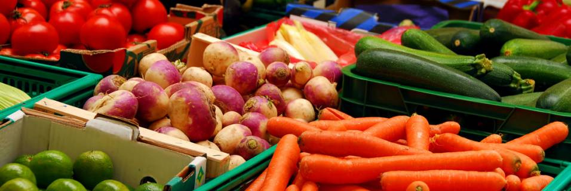

Agriculture

Mongolia is a remote country with limited transport and energy infrastructure, a small domestic market harsh climate, landlocked geography, nomadic livestock and low Population density. High dependency on livestock, which is the main base of the economy, highlights the volatility and risks from nature and weather, that so influences the Mongolian economy. The output of livestock production comprised 78.9 per cent of the total output of agriculture. The Mongolian food and agro industry sector consists of the processing and food industry, livestock and crop production.
Livestock is the main livelihood and source of wealth in Mongolia and the country's economy substantially depends on the production and development of this sector. Approximately 49 per cent of the total labour force is engaged in this sector.
As a result of privatisation processes some 97.2 per cent of the total livestock is now privately owned. 256.6 thousand families owned livestock, some 72.3 per cent of which (185.5 thousands households) are dependent solely on income generated from their livestock. Numbers of livestock per family differ significantly.
Some 41.3 per cent of Mongolia's territory is comprised of semi-desert areas (Gobi), which are frequently affected by natural disasters - Dzud and drought. One of the features of agricultural production is that almost half of the total population runs extensive livestock and non-intensive crop production activities, which are highly dependent on the nature and climate.
Recent weather patterns have had a very negative impact on agricultural production, following global warming of the climate. Mongolia is getting dryer and very prone to hazardous natural disasters - drought and dzud have recently taken place frequently in Mongolia.
Over the last four years, Dzud and drought caused major damage to agricultural production, and seriously impacted on the well being of the rural population. Supplies of raw materials to national factories and for export sales have also been adversely affected.
In particular, the livestock sector which produces 90 per cent of gross agricultural production is facing considerable constraints. Although the total livestock population grew up considerably from 1994 to 1999, huge numbers of livestock died in 2003, 2004 years' Dzud.
According to preliminary results of the annual livestock census, 30.4 million livestock were counted, 254.2 thousand of which were camels, 2.0 million horses, 2.0 million cattle, 12.9 million sheep and 13.3 million goats. The total number of livestock increased by 2.4 million heads or 8.5 percent compared to the previous year. If we consider livestock variations by type, horses increased by 23.8 thousand heads, cattle by 122.0 thousand heads, sheep by 1.2 million heads and goats by 1.0 million heads, while the number of camels fell by 2.4 thousand heads.
The livestock in 19 aimags increased by 17.8-294.7 thousand heads or 2.7-20.4 percent. Aimags such as Khovsgol (2504.3 thousand heads), Ovorkhangai (2301.2 thousand heads), Arkhangai (2194.9 thousand heads), Zavkhan (2102.1 thousand heads), Uvs (2021.3 thousand heads) were leading by the number of livestock. However, livestock in a few aimags including Sukhbaatar, Dornogovi, Bayan-Olgii declined by 26.2-56.9 thousand heads or 1.9-4.7 percent.
In 2005, female livestock amounted to 9.9 million, of which 85.0 percent was breeding stock. Share of new-born livestock to total breeding stock decreased by 2.5 percentage points over 2004. Number of survivals equaled 9.3 million heads that made up 94.1 percent of total number of new-born livestock. This amount was higher by 36.8 thousand heads over the previous year.
Number of losses of adult animals was 677.2 thousand heads, 385.5 2 thousand heads up than in 2004. Harsh winter at the beginning of 2005 caused the rise in livestock loss. Livestock losses resulted from weather conditions made up 67.4 percent of total losses, while losses caused by diseases amounted to 11.2 percent.
During 2005, 75.2 thousand tons of wheat, 82.7 thousand tons of potatoes, and 64.0 thousand tons of other vegetables were harvested. Fall of 63.3 thousand tons or 45.7 percent in wheat production, growth of 14.9 thousand tons or 30.2 percent in production of other vegetables and 2.6 thousand tons or 3.2 percent in potato production over 2004 was recorded.
Out of total crop, 41.1 percent was harvested in Selenge aimag, 17.8 percent in Bulgan aimag and 10.8 percent in Khentii aimag. The potato harvest in Tov aimag made up 26.8 of total, in Selenge aimag — 20.1 percent, in Khovd aimag 8.5 percent, in Bulgan aimag 7.1 percent, respectively. Out of total vegetable crop, 24.3 percent was harvested in Selenge aimag, 18.6 percent in Darkhan-Uul aimag, 16.3 percent in Tov aimag, and 14.7 percent in Khovd aimag.

On average, 470 kg of wheat and 8480 kg of potatoes were produced per hectare, down 330 kg and 350 kg from 2004, respectively.
In 2005, 830.7 thousand tons of fodder and 26.5 thousand tons of supplementary livestock feed were prepared. The fall of 19.8 thousand tons or 2.3 percent in prepared fodder, and 3.9 thousand tons or 12.9 percent in supplementary livestock feed from 2004 was estimated.
In 2005, harvested area was 189.5 thousand hectares, lower by 10.9 thousand hectares or 5.5 percent than in the previous year. The reasons for this drop were cold weather conditions in the harvesting season, non-lending seeds by the government, and increased farming expenses.
Unfavorable weather conditions, especially drought during planting period stunted wheat crop growth. Decline in wheat production with its substantial share caused fall in total crop production. Moreover, financial deficiency of farming enterprises and shortage of experienced employees were another reason for this drop.
(Source: Bank of Mongolia)